スピーカー制作
このページでは
ペレット化したクリアファイルを３Dプリンターを利用してスピーカーを制作する記録をまとめます。
アイデアスケッチ

このようなアイデアを出しましたが、モデリングの難易度とスピーカーの構造的に中に大きな空洞を作りたかったため、一番左のデザインにしました。
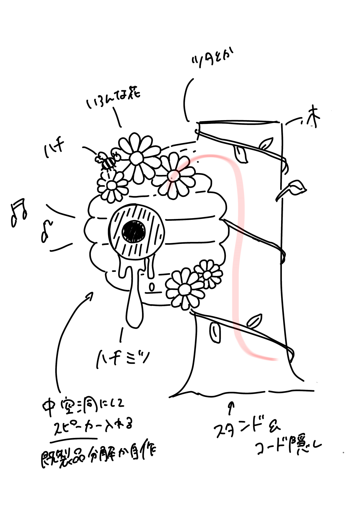
どこまで再現できるかわかりませんが、このスケッチをもとにモデリングを行います。
モデリング・印刷①
まずは装飾以外をモデリングして、普通のプリンターでうまくできるか検証。
印刷してみたところ、下についていたサポートはきれいに取れたが、中についているサポートを外すのに苦戦しました。
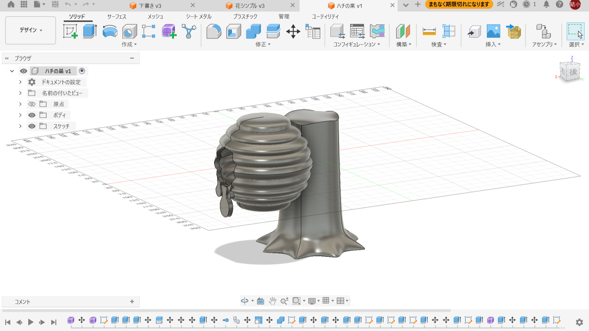
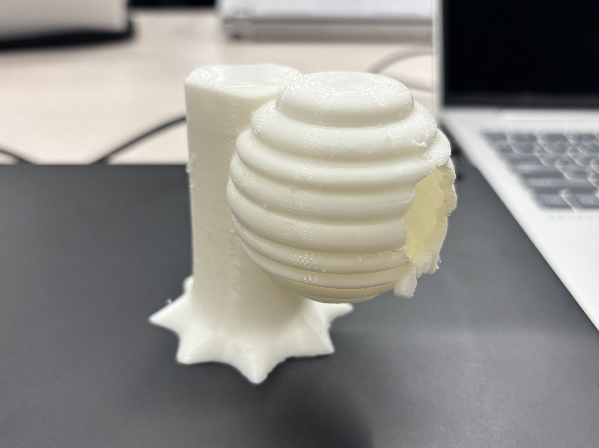
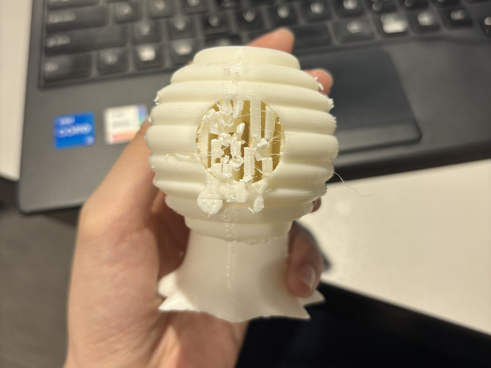
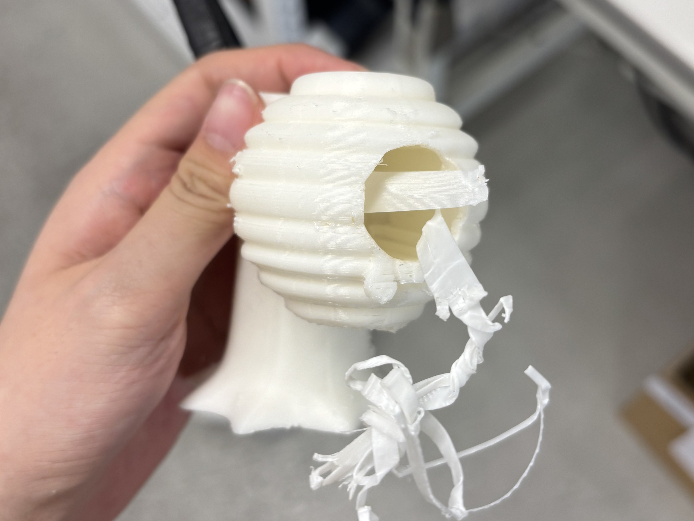
スピーカーの部品を入れることを考えると前が重たくなりすぎるため改良必要そう。
サポート検証
一応うまく印刷はできたので、クリアファイルペレットの３Dプリンターで印刷してみた。
この３Dプリンターではサポートの検証がまだ行われていないようなので、ラボスタッフの方と話しながら一緒にパラメーターの調整をすることに。
１回目 熱でサポートと本体が一体化してしまう。本来つかなくてもいい場所にまでサポートがついてしまう。

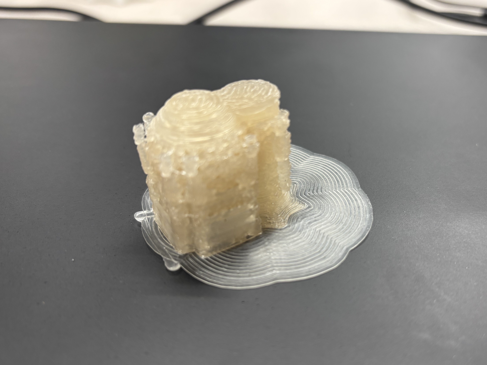
２回目 矢印のついているところを変更した。（トップ付近の層をベタ塗にする「３」→「０」、モデルとサポートとの距離「５０％」→「２０％」）
サポートの量は減ったが、まだ本体と一体化してしまう。
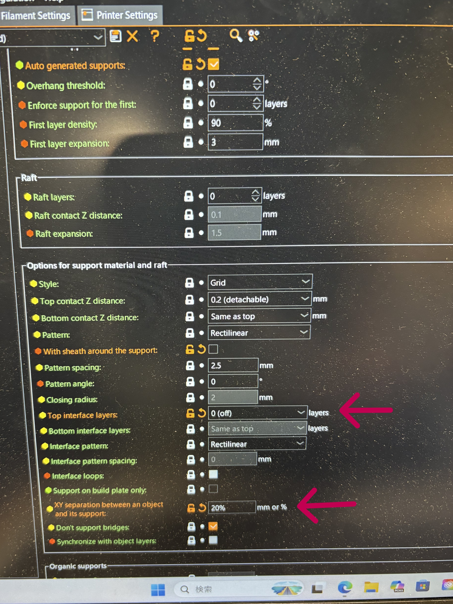
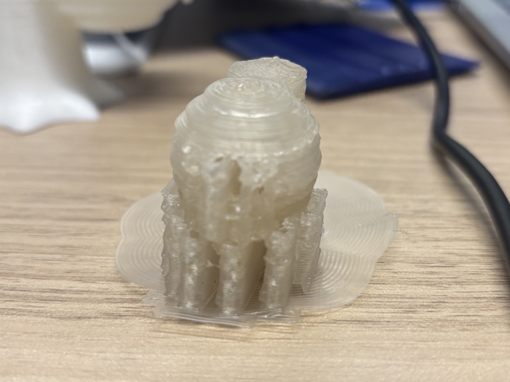
一回目と二回目のサポートを無理やり剥がしてみた。
少しずつむしり取るように剥がしていったところ、剥がした面が汚すぎるのでサポートが少なくて済む、もしくはサポートがつかないような設計に変える必要がある。
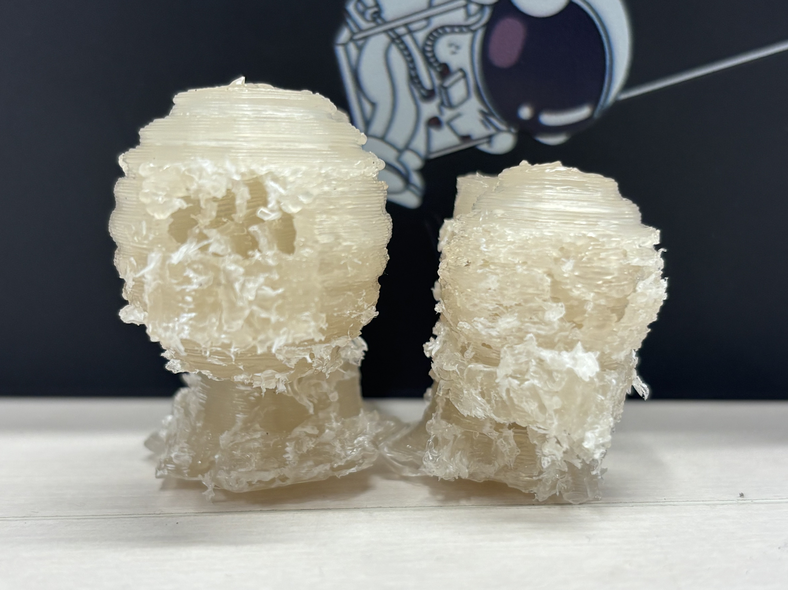
モデリング・印刷②
まず、前が重くなりすぎることを改善するために、木の幹を歪ませてハチの巣が後ろの方に来るように改良。
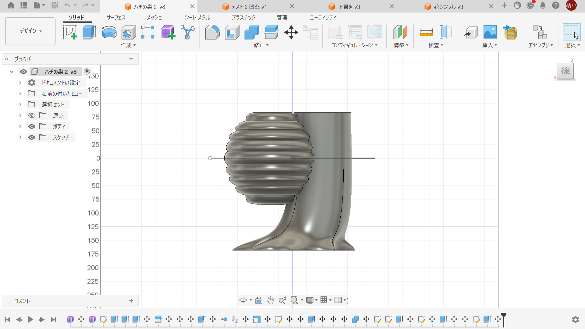
ラボの方と話し合った結果、サポートがつかないような設計に変更することになった。
スピーカーを三分割にして、別々に印刷し、各パーツに凹凸を作りはめ込む設計に改良。
凹凸をどのくらいにすればうまくはまるかわからないため、まずは凹凸だけを印刷して検証してみる。
凹凸検証
まずは差を２ミリにし、そこから調整していくことにした。
１回目 どちらのパーツもデコボコしているのでニッパーややすりでの調整が必要そう。余裕があるためもう少し狭くできそう。間に隙間ができるのが気になる。
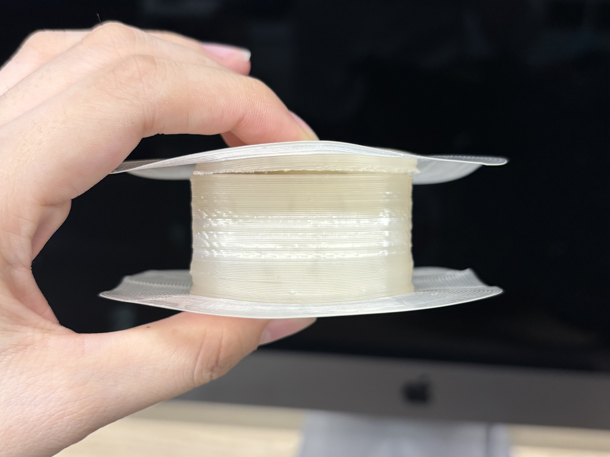
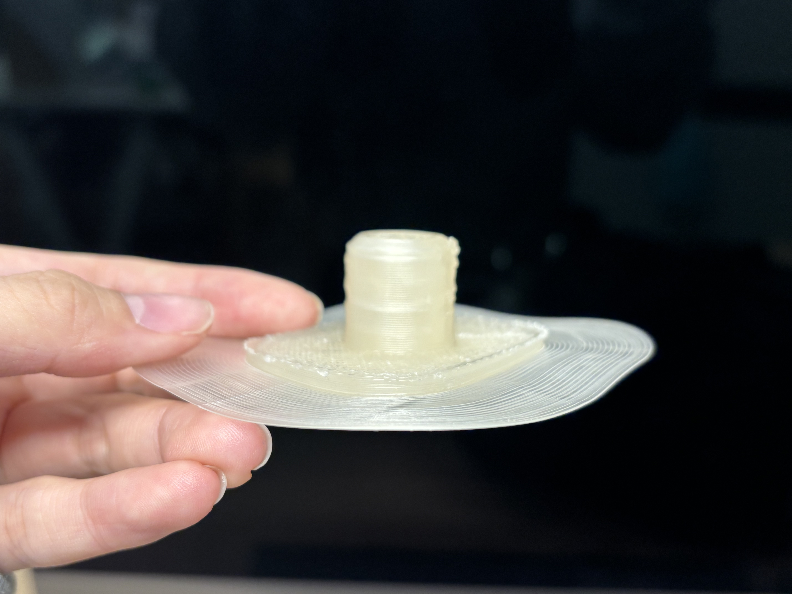